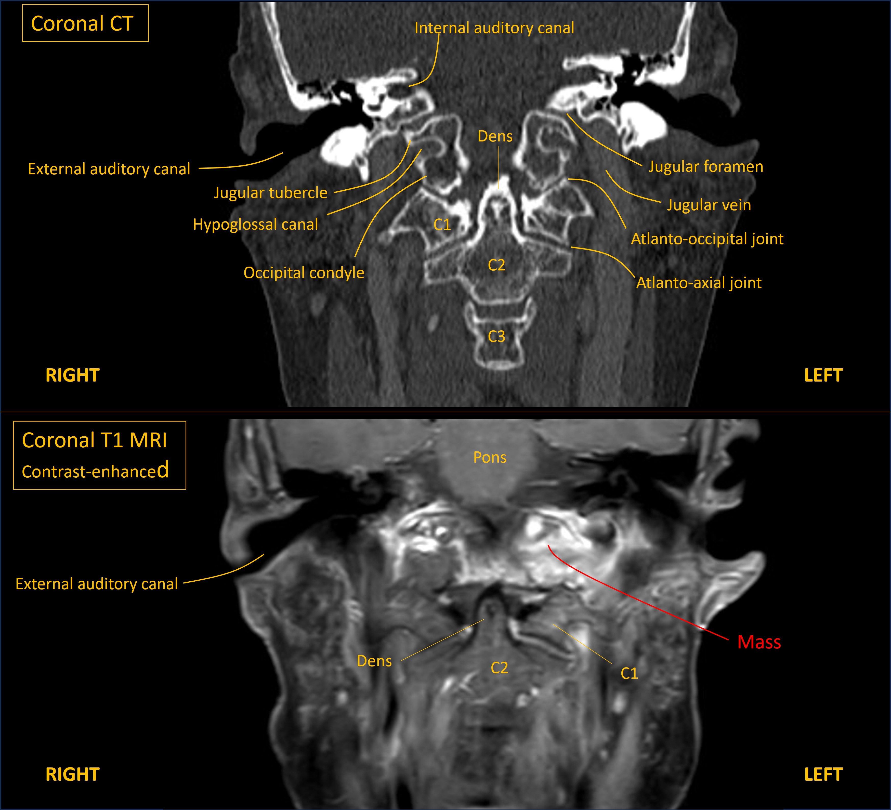
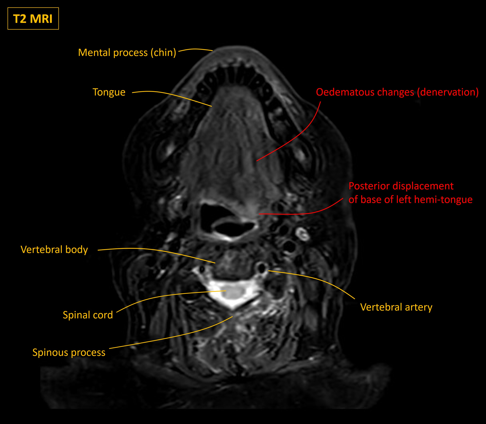

Case 17 - Slurred speech
Outcome
Urgent MRI head, skull base and neck were performed. These showed multiple bony metastases to the skull, including the basal occipital bone involving the left hypoglossal canal.

The left half of the tongue was visibly bright on T2 MRI, indicating oedema due to denervation, and the base was posteriorly displaced due to weakness.

There was also a malignant deposit in the soft tissue within the scalp. Body imaging showed pelvic disease including recurrence within the rectum and adjacent nodal tissues.
Palliative radiotherapy was given including to the skull. However, the patient very rapidly deteriorated and died within two months of diagnosis.
Final diagnosisLeft hypoglossal palsy due to skull base metastasis affecting the hypoglossal canal, due to recurrence of previously-treated rectal cancer – with rapidly fatal outcome.
Key points